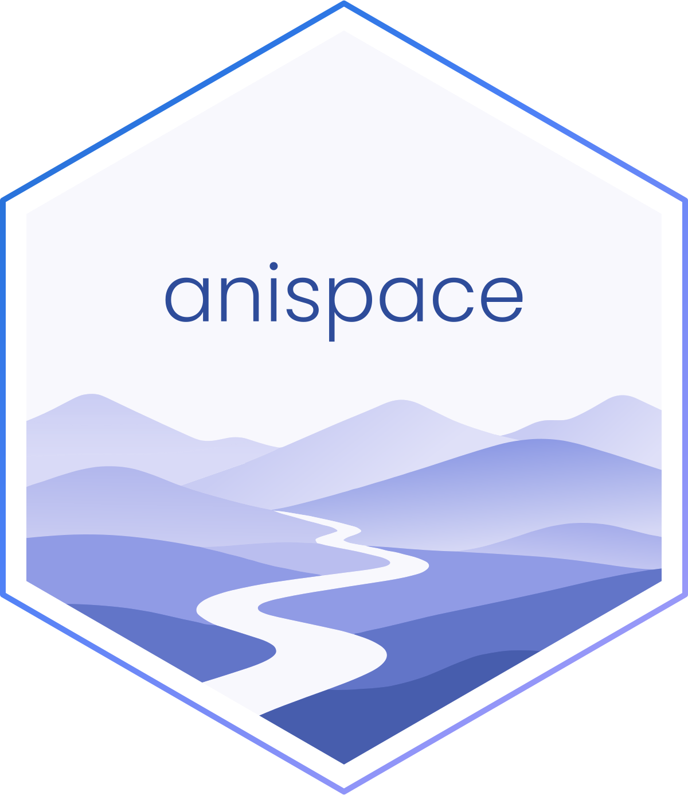

Quaternions from two body axes given as vectors
Source:R/quaternion.R
quat_from_vectors.Rd![[Experimental]](figures/lifecycle-experimental.svg)
The orientation whose body axis axes[1] points along primary, and
whose body axis axes[2] points towards secondary. Only the part of
secondary perpendicular to primary is used, so it need not be at right
angles to it; it only has to fix the roll about primary. The third axis
completes a right-handed set.
This is how three points define an orientation: primary from one point to
a second, and secondary from the first towards any third point off that
line. With the default axes, primary is the body's forward axis (x)
and the third point lies on the side of its y axis. With
axes = c("y", "x"), primary runs across the body and secondary fixes
which way is forward.
Usage
quat_from_vectors(primary, secondary, axes = c("x", "y"))Arguments
- primary
Vectors (length 3, or 3 columns) along body axis
axes[1]. Need not be unit length.- secondary
Vectors (length 3, or 3 columns) towards body axis
axes[2]. Need not be unit length or perpendicular toprimary.- axes
Two distinct body axes from
"x","y","z": the oneprimaryis mapped onto, then the onesecondarypoints towards.
Value
A quaternion matrix; see quaternions. A row is NA where either
vector is missing or zero, or the two are parallel, since the roll is
then undefined.
See also
quat_from_matrix(), which this builds the rotation for.
Examples
# Facing +y, with the body's left (+y) towards -x: a quarter turn about z
quat_from_vectors(c(0, 1, 0), c(-1, 0, 0))
#> w x y z
#> [1,] 0.7071068 0 0 0.7071068
# The secondary vector need not be perpendicular
quat_from_vectors(c(0, 1, 0), c(-1, 5, 0))
#> w x y z
#> [1,] 0.7071068 0 0 0.7071068
# Across the body: right-to-left along +y, forward towards +x
quat_from_vectors(c(0, 1, 0), c(1, 0, 0), axes = c("y", "x"))
#> w x y z
#> [1,] 1 0 0 0